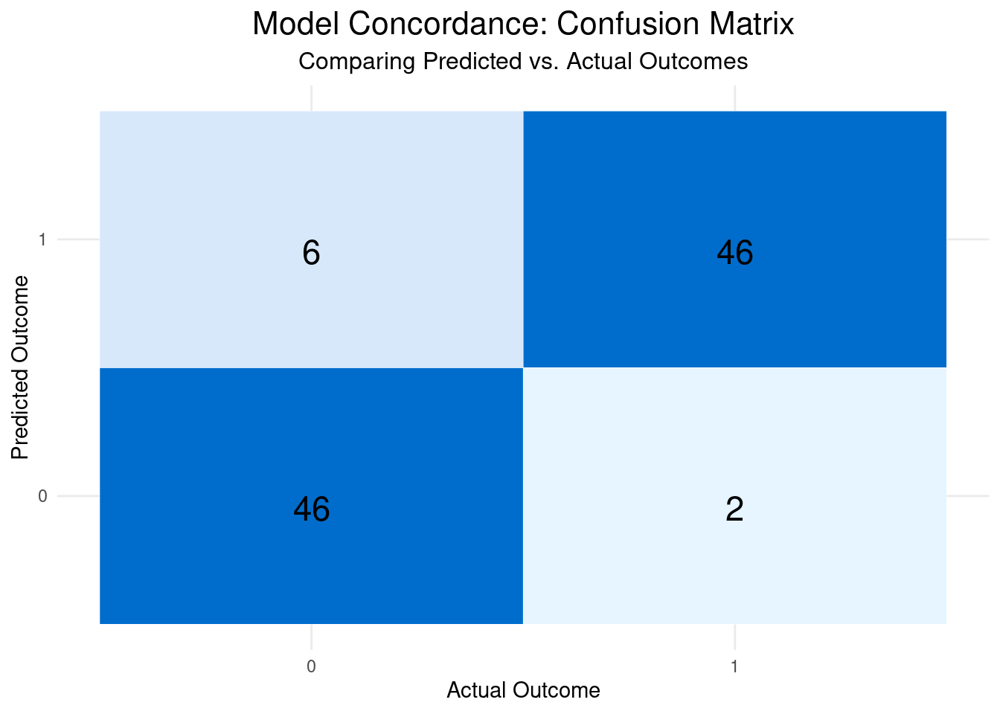

# Load the dplyr library for data manipulationlibrary(tidyverse)
── Attaching core tidyverse packages ──────────────────────── tidyverse 2.0.0 ──
✔ dplyr 1.1.4 ✔ readr 2.1.5
✔ forcats 1.0.0 ✔ stringr 1.5.1
✔ ggplot2 3.5.2 ✔ tibble 3.3.0
✔ lubridate 1.9.4 ✔ tidyr 1.3.1
✔ purrr 1.0.4
── Conflicts ────────────────────────────────────────── tidyverse_conflicts() ──
✖ dplyr::filter() masks stats::filter()
✖ dplyr::lag() masks stats::lag()
ℹ Use the conflicted package (<http://conflicted.r-lib.org/>) to force all conflicts to become errors
Code
# Ensure the script is reproducibleset.seed(42)# Create a mock dataset# This simulates data for a simple classification problem,# like predicting an outcome based on a user's age and group.mock_data <-tibble(age =sample(18:65, 100, replace =TRUE),group =sample(c("A", "B", "C"), 100, replace =TRUE),# Create a simple binary outcome based on age and groupoutcome =as.integer(age >40& group %in%c("B", "C") | age >55))# Save the data to a CSV file in the 'data' subdirectory# First, create the directory if it doesn't existwrite.csv(mock_data, "../../../data/mock_data.csv", row.names =FALSE)# print the head of the metadatamock_data
# A tibble: 100 × 3
age group outcome
<int> <chr> <int>
1 54 A 0
2 18 A 0
3 42 A 0
4 27 A 0
5 53 B 1
6 35 C 0
7 64 A 1
8 41 B 1
9 24 A 0
10 53 C 1
# ℹ 90 more rows
Modelling in python
Code
import pandas as pdfrom sklearn.model_selection import train_test_splitfrom sklearn.linear_model import LogisticRegressionfrom sklearn.metrics import accuracy_scoredef train_and_predict():""" This function loads the data, trains a simple logistic regression model, and saves the predictions. """# Load the dataset created by the R script df = pd.read_csv("../../../data/mock_data.csv")# Prepare the data for modeling# Use one-hot encoding for the 'group' categorical feature df_processed = pd.get_dummies(df, columns=['group'], drop_first=True)# Define features (X) and target (y) X = df_processed.drop('outcome', axis=1) y = df_processed['outcome']# Split data into training and testing sets X_train, X_test, y_train, y_test = train_test_split( X, y, test_size=0.3, random_state=42 )# Initialize and train the logistic regression model model = LogisticRegression(random_state=42) model.fit(X_train, y_train)# Make predictions on the full dataset to return to R all_predictions = model.predict(X)# Add predictions to the original dataframe df['predicted_outcome'] = all_predictions# Save the results with predictions to a new CSV df.to_csv("../../../data/predictions.csv", index=False)# Run the main functionif__name__=="__main__": train_and_predict()
Check the output of the prediction
Code
df <-read_csv("../../../data/predictions.csv")
Rows: 100 Columns: 4
── Column specification ────────────────────────────────────────────────────────
Delimiter: ","
chr (1): group
dbl (3): age, outcome, predicted_outcome
ℹ Use `spec()` to retrieve the full column specification for this data.
ℹ Specify the column types or set `show_col_types = FALSE` to quiet this message.
Code
# print the head of the predictiondf
# A tibble: 100 × 4
age group outcome predicted_outcome
<dbl> <chr> <dbl> <dbl>
1 54 A 0 1
2 18 A 0 0
3 42 A 0 0
4 27 A 0 0
5 53 B 1 1
6 35 C 0 0
7 64 A 1 1
8 41 B 1 1
9 24 A 0 0
10 53 C 1 1
# ℹ 90 more rows
Visualize the results
Code
library(caret)
Loading required package: lattice
Attaching package: 'caret'
The following object is masked from 'package:purrr':
lift
Code
# make them as factorspredicted_outcome <-factor(df$predicted_outcome)actual_outcome <-factor(df$outcome)conf_matrix <-confusionMatrix(data = predicted_outcome, reference = actual_outcome)# show the confusion matrixconf_matrix
Confusion Matrix and Statistics
Reference
Prediction 0 1
0 46 2
1 6 46
Accuracy : 0.92
95% CI : (0.8484, 0.9648)
No Information Rate : 0.52
P-Value [Acc > NIR] : <2e-16
Kappa : 0.8403
Mcnemar's Test P-Value : 0.2888
Sensitivity : 0.8846
Specificity : 0.9583
Pos Pred Value : 0.9583
Neg Pred Value : 0.8846
Prevalence : 0.5200
Detection Rate : 0.4600
Detection Prevalence : 0.4800
Balanced Accuracy : 0.9215
'Positive' Class : 0
Code
# plot the datacm_table <-as.data.frame(conf_matrix$table)# Create the heatmap plotconcordance_plot <-ggplot(data = cm_table, aes(x = Reference, y = Prediction, fill = Freq)) +geom_tile(color ="white") +# Add tile bordersgeom_text(aes(label = Freq), vjust =1, size =6, color ="black") +# Add counts to the tilesscale_fill_gradient(low ="#e6f5ff", high ="#006dcc") +# Use a blue color gradientlabs(title ="Model Concordance: Confusion Matrix",subtitle ="Comparing Predicted vs. Actual Outcomes",x ="Actual Outcome",y ="Predicted Outcome" ) +theme_minimal() +# Use a clean themetheme(legend.position ="none", # Hide the color bar legendplot.title =element_text(hjust =0.5, size =16),plot.subtitle =element_text(hjust =0.5, size =12) )# Display the plotconcordance_plot

Plot by age group
Code
# Create a new column to check if the prediction was correct# Then, create age groups using the cut() functionaccuracy_by_age <- df %>%mutate(correct_prediction =case_when(predicted_outcome == outcome ~1, T~0),age_group =cut(age,breaks =c(17, 35, 50, Inf),labels =c("18-35", "36-50", "51+")) ) %>%group_by(age_group) %>%# Calculate the accuracy for each groupsummarise(accuracy =mean(correct_prediction),count =n() # Get the number of observations in each group )# Create the bar plotage_accuracy_plot <-ggplot(accuracy_by_age, aes(x = age_group, y = accuracy, fill = age_group)) +geom_bar(stat ="identity") +geom_text(aes(label =paste0(round(accuracy *100), "%")), vjust =-0.5) +# Add accuracy percentagescale_y_continuous(limits =c(0, 1), labels = scales::percent) +# Format y-axis as percentagelabs(title ="Model Accuracy by Age Group",x ="Age Group",y ="Accuracy" ) +theme_minimal() +theme(legend.position ="none")# Display the plotage_accuracy_plot